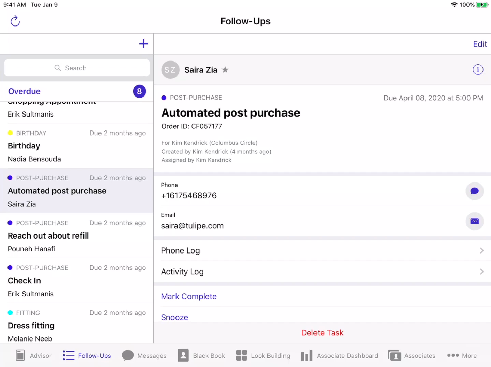

Tulip Retail
Kitchener, ON
For my third work term, I had the exciting opportunity to return to Tulip Retail as a co-op on the Product Delivery Team. Since I left the company at the end of my first co-op in August 2022, I knew there was still a lot for me to learn from all the talented individuals there. Getting the chance to come back for a second term and work with such an amazing and supportive team once again was truly the highlight of my summer. Even though I held the same job and returned to the same team, it does not mean that my co-op experience was anything less than filled with new experiences and challenges!
About The Company
A well-known technology company dedicated to revolutionizing the retail industry and improving the in-store shopping experience, Tulip Retail was established in 2013. Reputable companies like Chanel, Coach, and Kate Spade use the company's cutting-edge retail mobile software platform to provide their store staff with mobile devices, enabling customized customer experiences and greater sales. In a collaborative setting that encourages technology progress in the retail sector, Kitchener-based ,Tulip thrives. Notably, the business has won numerous accolades and honours for its dedication to innovation and quality. With interesting opportunities for anyone interested in computer science and the future of retail, Tulip Retail distinguishes out as a standout employer.
Learning Goals
-
Gain a comprehensive understanding of the duties, tools (Jira), and procedures involved in project management at Tulip Retail by shadowing a Project Manager on a project.
- My primary learning objective during my summer 2023 co-op as a software developer at Tulip was to obtain a thorough grasp of project management by observing a Project Manager in action and actively participating in their duties and tools, particularly Jira. My Area of Application/Minor is based on Project Management, and this goal was one I was espically excited for. I worked closely with the project management head to accomplish this and attended one-on-one workshops with project managers. I was able to become fully immersed in the project management process by participating in meetings and learning initiatives with the project management team. I carefully watched the Project Manager's decision-making processes throughout the shadowing and workshop sessions, interacted with the project team members to comprehend their duties, and actively became acquainted with Jira's capabilities and useful applications. As my coop term went on, I successfully applied my newly acquired project management skills, especially with Jira, to significantly contribute to the successful completion of tasks and projects that were assigned to me as a developer. In addition to broadening my skill set as a software engineer, this experience has given me a comprehensive understanding of project management's critical role in attaining organizational objectives at Tulip Retail.
-
Improve my software development skills and fundamentals in a practical way, focusing on automation (Workato) and utilizing hooks and extensions (JavaScript).
- Over the course of my summer 2023 co-op as a software developer at Tulip, I had the valuable opportunity to delve into my learning goal of enhancing my software development skills with a focus on automation using Workato and leveraging its capabilities to communicate, send, and receive data from the client's Salesforce channel. I worked diligently towards achieving this aim throughout my time by leading several integration initiatives for David Yurman's migration from version 5.0 to version 7.0 on the Tulip platform. As I used Workato's official third-party automation software to convert client data into Tulip and vice versa, bridging the communication between the two platforms, this experience gave me a deeper understanding of the capabilities of the company. As my employment term went on, I found that I was conducting office hours as well as attending them to assist other developers with their Workato-related inquiries or issues. This improved my comprehension and made it possible for me to give back to the Tulip development community. Overall, this co-op term has been extremely fulfilling for me because I've seen significant improvement in my software development abilities, particularly in the area of automation and using Workato to make it easy for data to flow between systems, while actively helping Tulip's projects succeed.
-
Improve on my own cross-team communication and collaboration as a software developer coop at Tulip Retail.
- I have made tremendous progress towards attaining my learning objective of improving cross-team communication and teamwork throughout my summer 2023 co-op as a software developer at Tulip Retail. I was able to obtain important insights into the nuances of project management and its function in the overall development process through unique opportunities like shadowing, workshops, and learning initiatives with the project management team. These insights enhanced my comprehension of successful communication while also emphasizing the value of daily involvement in project tickets, synchronizing sprints with client expectations, and dealing with unforeseen difficulties. Moreover, working with several development teams, such as the Product and API teams, was necessary because of my involvement in integrations for David Yurman. Through this experience, I became familiar with the dynamics of collaborating with many teams, which allowed me to actively participate in the redesign of internal tools to meet integration needs. As a result, during my time at Tulip Retail, I have unquestionably improved my cross-team communication abilities and acquired the capacity to promote seamless departmental teamwork, which has helped me become a more well-rounded and efficient software developer.
Product Delivery
I had an amazing experience while I was a member of the Product Delivery Team that not only expanded my skill set but also aided in the transformation of how the company operated. I took on the challenge of building seamless interfaces that would provide
data flow between our client's (David Yurman) Salesforce platform and numerous other crucial Tulip services after being given the task of bridging the gap between separate platforms and integrating them seamlessly.
The necessity to automate these integrations was at the core of this project, which was then my responsibility to develop. The process was akin to mastering a new language, and that language was Ruby. This was a significant learning
curve for me, as it exposed me to the realms of automation, data handling, and Salesforce utilization from a developer's perspective. One of the most pivotal aspects of these integrations was their role in transforming our client's customer
data from Salesforce into a format tailored for the Tulip-facing clients and vice versa. This not only streamlined operations but also enhanced the user experience by ensuring that data was always up to date and readily available.

The integration described in the passage refers to a critical feature within the Tulip Retail clienting app. This feature addresses the need for store follow-ups, which can originate from two primary sources: interactions conducted
through the Tulip iOS application and interactions logged in Salesforce, a widely used customer relationship management (CRM) platform. The purpose of this follow-up integration is to streamline and automate the process of tracking and
managing customer interactions and follow-ups. It allows retail associates to record customer interactions, such as inquiries, purchases, or service requests, regardless of whether they occur in the physical store using the Tulip app or
through digital channels managed in Salesforce. The complexity of this integration lies in its ability to synchronize and maintain a unified record of customer interactions across two distinct platforms, the Tulip app and Salesforce. It
involves not only recording and storing these interactions but also ensuring that any updates or changes in status are seamlessly propagated between the two systems. For example, if a customer's inquiry status changes from "pending" to
"resolved" in Salesforce, this change should reflect immediately in the Tulip app, and vice versa. This level of synchronization and automation is vital for several reasons. First and foremost, it significantly improves workflow efficiency
for retail associates. They no longer need to switch between different systems or manually update records, allowing them to focus more on providing excellent customer service. Secondly, it enhances client satisfaction by ensuring that
customers receive timely and accurate follow-ups, creating a more seamless and engaging shopping experience.
In conclusion, my experience on the Product Delivery Team was a remarkable trip full of discoveries, difficulties, and successes. Along with mastering integration's challenges, I also excelled as a skilled Ruby programmer and Salesforce
integration professional. My participation improved our procedures and brought a new level of satisfaction to our clients. I am incredibly proud to have been a part of this path of innovation and development.
My Role
My official title is Software Developer Co-op - Product Delivery. My duties consist of:
- Work as a key member of a product development team.
- Design and build full-stack solutions, from databases to APIs to user experience.
- Create professional and user-engaging iOS and web applications.
- Integrate the Tulip platform with the retail systems of collaborative brands.
My skill set for the job consist of:
- Common web and mobile technologies (i.e., JavaScript, PHP, MySQL, Go, and Swift).
- Knowledge of version control systems.
- Problem-solving skills, specifically ones that consist of simplifying complex problems into actionable next steps.
- Knowledge of shipping applications with CI or CD tooling.
- Skilled in automation tools such as Workato.
Ackowledgments
In closing, I would like to express my heartfelt gratitude to those who have made this journey memorable and enriching. First and foremost, my deepest appreciation goes to my supervisor, mentor, and teammate, Neil St. Amour, whose unwavering support and belief in me have been truly remarkable. In addition, I'd like to express my gratitude to my fellow Product Delivery developers, Jastine Goyena, Rachel Lewis, and Ross Kett, for the many wonderful experiences we've shared and the commitment they demonstrated during our gruelling mob sessions. This experience has been made more rewarding by your teamwork and dedication. This term report stands as a testament to the collaborative spirit and dedication of our team, and I am extremely grateful to have had the opportunity to work with such exceptional people. I want to thank everyone for their contributions and for making this journey special.